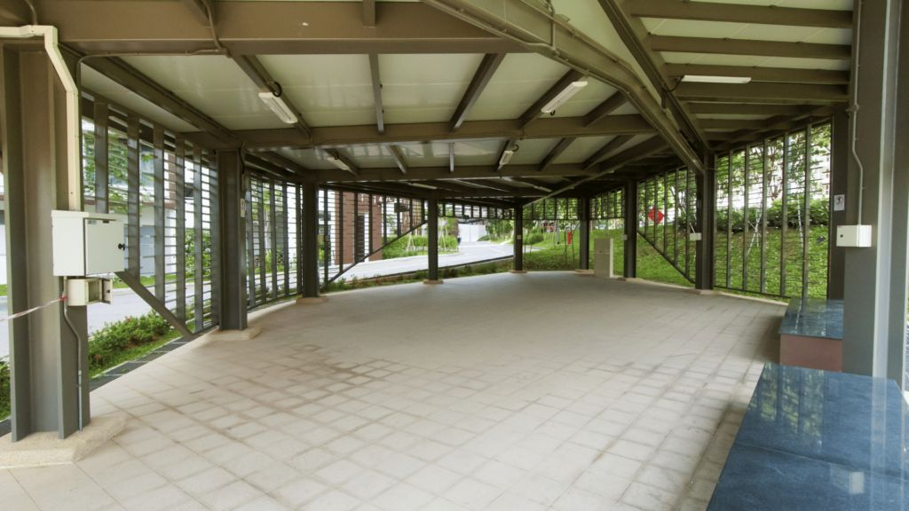

01
Uso de espacios comunes
Reglamento y convivencia
Ver detalle
Regular el uso de espacios comunes es clave para la buena convivencia entre los copropietarios. Revisamos la regulación actual de estos espacios y solucionamos las irregularidades a través de la modificación del reglamento interno de copropiedad o la creación de un reglamento de convivencia, para que cada propietario use estos espacios de manera equitativa.